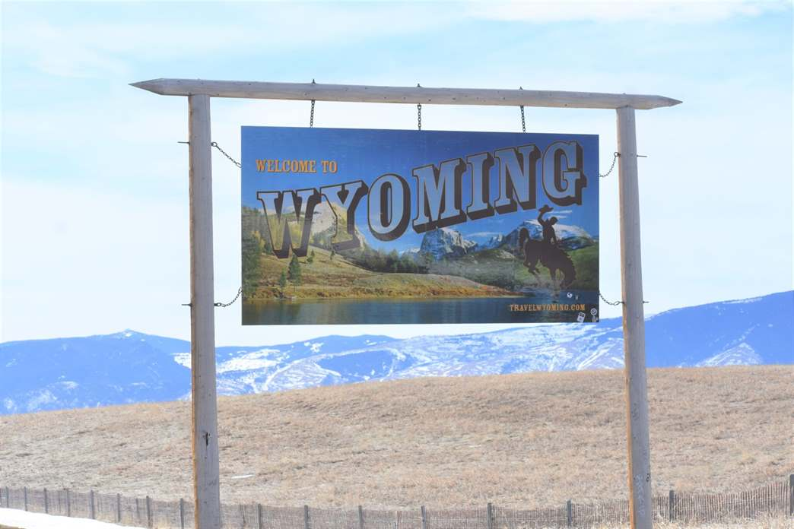
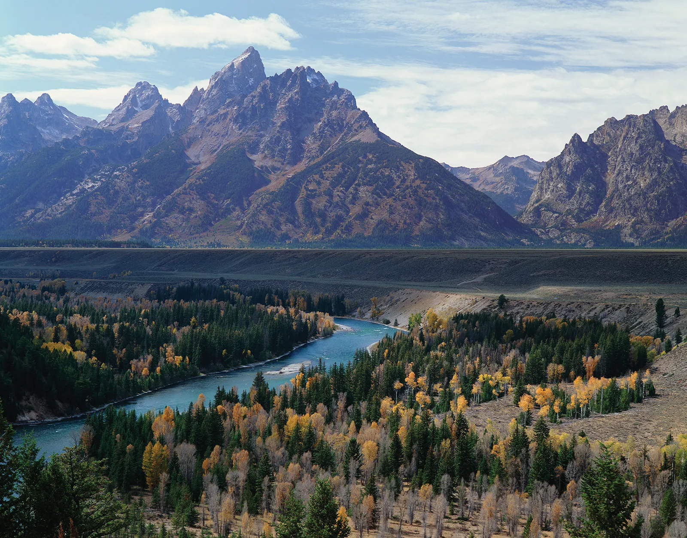
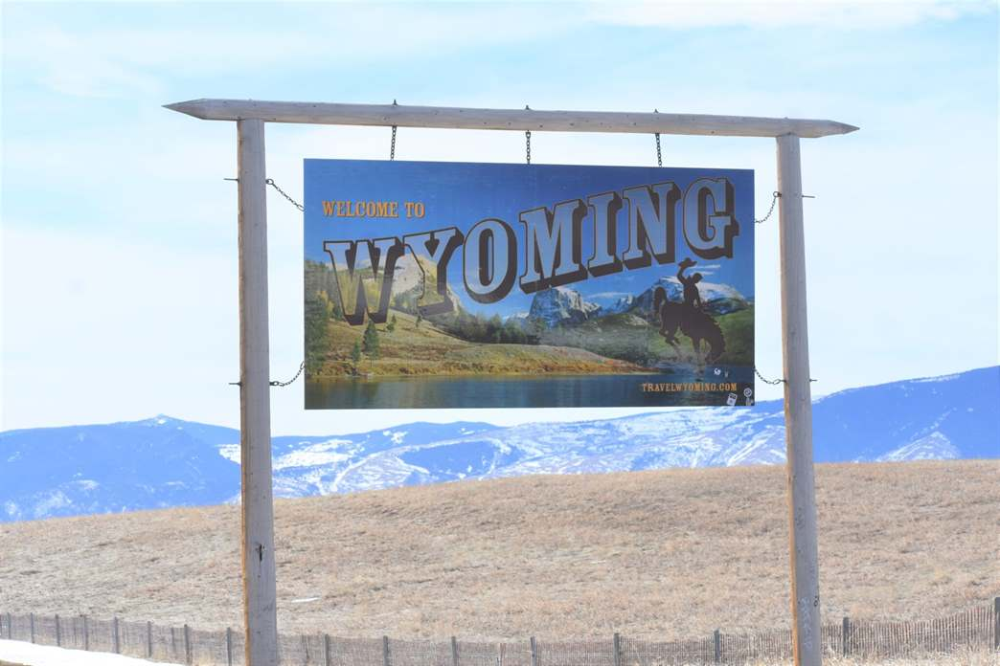
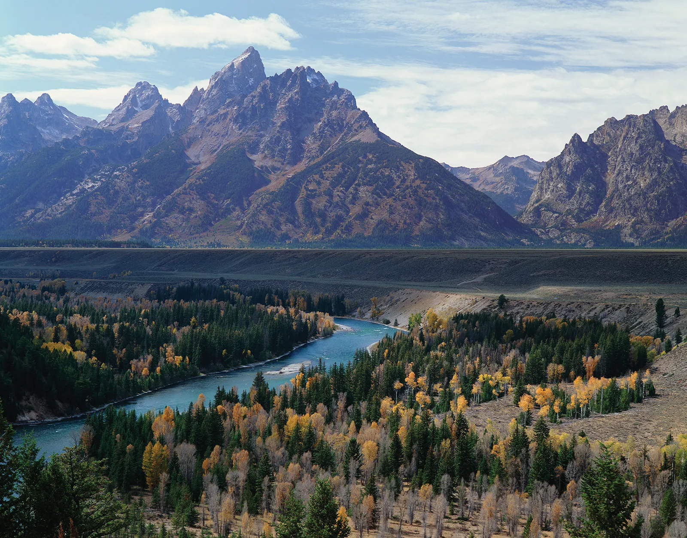

Wyoming — AQSHning markaziy-g‘arbiy qismida joylashgan, keng dashtlar,
tog‘lar va milliy bog‘lar bilan mashhur shtat. U 1890-yil 10-iyulda AQSHga
44-shtat sifatida qo‘shilgan.
🌍 Geografik joylashuvi: G‘arbda: Idaho
Sharqda: South Dakota va Nebraska
Shimolda: Montana
Janubda: Colorado va Utah bilan chegaradosh.
Hududi: Katta hududga ega bo‘lsa-da, aholisi kam. Asosan tog‘li va
tekisliklardan iborat. Rocky Mountains tizmasi g‘arbiy qismidan o‘tadi.
💼 Iqtisodiyoti: Wyoming iqtisodiyoti quyidagi sohalarga tayangan:
Energetika: Ko‘mir, neft va gaz ishlab chiqarish (AQSHdagi yetakchi ko‘mir
ishlab chiqaruvchi shtatlardan biri)
Qishloq xo‘jaligi: Chorvachilik va qishloq xo‘jalik mahsulotlari Turizm:
Yellowstone va Grand Teton kabi milliy bog‘lar tufayli turizm muhim o‘rin
tutadi
🏞️ Diqqatga sazovor joylari: Yellowstone National Park — dunyodagi
birinchi milliy bog‘, geizerlar (Old Faithful), yovvoyi hayvonlar, go‘zal
manzaralar Grand Teton National Park — tog‘lar, ko‘llar va yurish yo‘llari
bilan mashhur Devils Tower — noodatiy tosh manzara, muqaddas joy sifatida
qaraladi Jackson Hole — chang‘i kurorti va tabiatsevarlar uchun mashhur
manzil
🎭 Madaniyat: Kovboy va yovvoyi g‘arb an’analari hali-hanuz shtat
madaniyatining asosiy qismi Har yili turli rodeolar, mahalliy yarmarkalar
va festivallar o‘tkaziladi Shtat "Equality State" (Tenglik Shtati) deb ham
ataladi, chunki bu yerda ayollarga saylov huquqi birinchi bo‘lib berilgan
(1869-yil)
 


